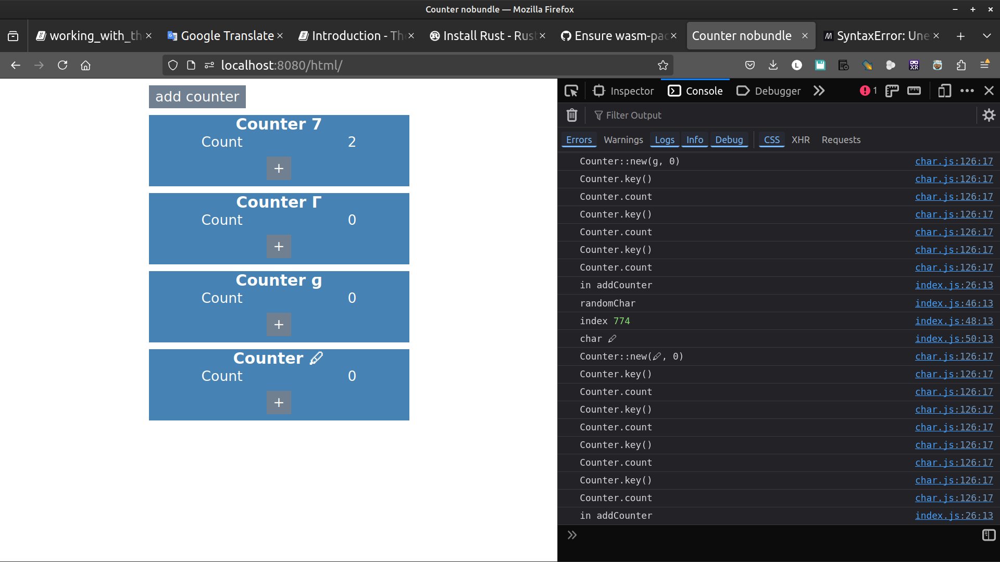

Working with the char type
The #[wasm_bindgen] macro will convert the rust char type to a single code-point js string, and this example shows how to work with this.
Definition:
Codepoint An unique number for each Unicode character. It is represented by a collection of 1-6 uint8 elements for UTF-8, 1-2 uint16 elements for UTF-16, 1 uint32 element for UCS4, 1 uint8 element for ASCII, or something else. [MDN web doc]
Opening this example should display a single counter with a random character for it's key and 0 for its count.
You can click the + button to increase a counter's count.
By clicking on the "add counter" button you should see a new counter added to the list with a different random character for it's key.
Under the hood javascript is choosing a random character from an Array of characters and passing that to the rust Counter struct's constructor so the character you are seeing on the page has made the full round trip from js to rust and back to js.
_ [wasm-bindgen Guide]
Original [wasm-bindgen example]
PART I. Make it run
Converting Examples in 7 steps
1. Make the file structure
cargo new char --lib
cd char
mkdir -p www/html www/js www/css
Note: we are going to use a css stylesheet in this project
2. Edit Cargo.toml, add crate-type and wasm-bindgen dependency
[package]
name = "char"
version = "0.1.0"
edition = "2021"
[lib]
crate-type = ["cdylib"]
# See more keys and their definitions at
# https://doc.rust-lang.org/cargo/reference/manifest.html
[dependencies]
wasm-bindgen = "0.2.88"
3. Get the code
Cut and paste the import-js example from github src/lib.rs
or the rust code in
#![allow(unused)] fn main() { // src/lib.rs use wasm_bindgen::prelude::*; // lifted from the `console_log` example #[wasm_bindgen] extern "C" { #[wasm_bindgen(js_namespace = console)] fn log(s: &str); } #[derive(Debug)] #[wasm_bindgen] pub struct Counter { key: char, count: i32, } #[wasm_bindgen] impl Counter { pub fn new(key: char, count: i32) -> Counter { log(&format!("Counter::new({}, {})", key, count)); Counter { key, count } } pub fn key(&self) -> char { log("Counter.key()"); self.key } pub fn count(&self) -> i32 { log("Counter.count"); self.count } pub fn increment(&mut self) { log("Counter.increment"); self.count += 1; } pub fn update_key(&mut self, key: char) { self.key = key; } } }
Note we have the wasm_bindgen macro immediatly before our struct declaration.
#![allow(unused)] fn main() { #[derive(Debug)] #[wasm_bindgen] pub struct Counter { key: char, count: i32, } }
Having it placed as in the official example resulted in Counter not being pick up
and as a result not available in the glue code pkg/char.js which resulted in
SyntaxError: ambiguous indirect export: Counter in the browser.
// DONT DO THIS
#[wasm_bindgen] <--- wrong place
#[derive(Debug)]
pub struct Counter {
key: char,
count: i32,
}
4. create the index file at www/html/index.html:
<!DOCTYPE html>
<html>
<head>
<meta charset="UTF-8">
<title>Counter nobundle</title>
<link rel="stylesheet" href="../css/style.css"></head>
<body>
<button id="add-counter" type="button">add counter</button>
<div id="container">
</div>
<script type="module" src="../js/index.js"></script>
</body>
</html>
Let's put the stylesheet in www/css/style.css
* {
font-family: sans-serif;
font-size: 16pt;
}
h1 {
font-size: 18pt;
font-weight: bold;
margin: 0;
}
button {
padding: 5px 10px;
border: none;
background: slategrey;
margin: 10px auto;
color: white;
}
body {
width: 400px;
margin: auto;
}
#container,
.counter {
display: flex;
flex-flow: column;
justify-content: flex-start;
align-items: flex-start;
align-content: flex-start;
}
.counter {
margin-bottom: 10px;
background: steelblue;
color: white;
align-items: center;
width: 100%;
}
.field {
display: flex;
flex-flow: row;
justify-content: space-around;
width: 100%;
}
5. js files
5.1 Get char-list.js
Cut & paste char-list{target="_blank"} and save as char-list.js in www/js
or
wget https://raw.githubusercontent.com/rustwasm/wasm-bindgen/main/examples/char/chars-list.js
or
curl https://raw.githubusercontent.com/rustwasm/wasm-bindgen/main/examples/char/chars-list.js -o chars-list.js
export let chars = [
'!','#','$','%','&','\'','(',')','*','+',',',
'-','.','/','0','1','2','3','4','5','6','7',
'8','9',':',';','<','=','>','?','@','A','B',
'C','D','E','F','G','H','I','J','K','L','M',
'N','O','P','Q','R','S','T','U','V','W','X',
'Y','Z','[',']','^','_','`','a','b','c',
'd','e','f','g','h','i','j','k','l','m','n',
'o','p','q','r','s','t','u','v','w','x','y',
'z','{','|','}','~',' ','¡','¢','£','¤','¥',
'¦','§','¨','©','ª','«','¬','®','¯','°',
'±','²','³','´','µ','¶','·','¸','¹','º','»',
'¼','½','¾','¿','À','Á','Â','Ã','Ä','Å','Æ',
'Ç','È','É','Ê','Ë','Ì','Í','Î','Ï','Ð','Ñ',
'Ò','Ó','Ô','Õ','Ö','×','Ø','Ù','Ú','Û','Ü',
'Ý','Þ','ß','à','á','â','ã','ä','å','æ','ç',
'è','é','ê','ë','ì','í','î','ï','ð','ñ','ò',
'ó','ô','õ','ö','÷','ø','ù','ú','û','ü','ý',
'þ','ÿ','Ā','ā','Ă','ă','Ą','ą','Ć','ć','Ĉ',
'ĉ','Ċ','ċ','Č','č','Ď','ď','Đ','đ','Ē','ē',
'Ĕ','ĕ','Ė','ė','Ę','ę','Ě','ě','Ĝ','ĝ','Ğ',
'ğ','Ġ','ġ','Ģ','ģ','Ĥ','ĥ','Ħ','ħ','Ĩ','ĩ',
'Ī','ī','Ĭ','ĭ','Į','į','İ','ı','IJ','ij','Ĵ',
'ĵ','Ķ','ķ','ĸ','Ĺ','ĺ','Ļ','ļ','Ľ','ľ','Ŀ',
'ŀ','Ł','ł','Ń','ń','Ņ','ņ','Ň','ň','ʼn','Ŋ',
'ŋ','Ō','ō','Ŏ','ŏ','Ő','ő','Œ','œ','Ŕ','ŕ',
'Ŗ','ŗ','Ř','ř','Ś','ś','Ŝ','ŝ','Ş','ş','Š',
'š','Ţ','ţ','Ť','ť','Ŧ','ŧ','Ũ','ũ','Ū','ū',
'Ŭ','ŭ','Ů','ů','Ű','ű','Ų','ų','Ŵ','ŵ','Ŷ',
'ŷ','Ÿ','Ź','ź','Ż','ż','Ž','ž','ſ','ƀ','Ɓ',
'Ƃ','ƃ','Ƅ','ƅ','Ɔ','Ƈ','ƈ','Ɖ','Ɗ','Ƌ','ƌ',
'ƍ','Ǝ','Ə','Ɛ','Ƒ','ƒ','Ɠ','Ɣ','ƕ','Ɩ','Ɨ',
'Ƙ','ƙ','ƚ','ƛ','Ɯ','Ɲ','ƞ','Ɵ','Ơ','ơ','Ƣ',
'ƣ','Ƥ','ƥ','Ʀ','Ƨ','ƨ','Ʃ','ƪ','ƫ','Ƭ','ƭ',
'Ʈ','Ư','ư','Ʊ','Ʋ','Ƴ','ƴ','Ƶ','ƶ','Ʒ','Ƹ',
'ƹ','ƺ','ƻ','Ƽ','ƽ','ƾ','ƿ','ǀ','ǁ','ǂ','ǃ',
'DŽ','Dž','dž','LJ','Lj','lj','NJ','Nj','nj','Ǎ','ǎ',
'Ǐ','ǐ','Ǒ','ǒ','Ǔ','ǔ','Ǖ','ǖ','Ǘ','ǘ','Ǚ',
'ǚ','Ǜ','ǜ','ǝ','Ǟ','ǟ','Ǡ','ǡ','Ǣ','ǣ','Ǥ',
'ǥ','Ǧ','ǧ','Ǩ','ǩ','Ǫ','ǫ','Ǭ','ǭ','Ǯ','ǯ',
'ǰ','DZ','Dz','dz','Ǵ','ǵ','Ƕ','Ƿ','Ǹ','ǹ','Ǻ',
'ǻ','Ǽ','ǽ','Ǿ','ǿ','Ȁ','ȁ','Ȃ','ȃ','Ȅ','ȅ',
'Ȇ','ȇ','Ȉ','ȉ','Ȋ','ȋ','Ȍ','ȍ','Ȏ','ȏ','Ȑ',
'ȑ','Ȓ','ȓ','Ȕ','ȕ','Ȗ','ȗ','Ș','ș','Ț','ț',
'Ȝ','ȝ','Ȟ','ȟ','Ƞ','ȡ','Ȣ','ȣ','Ȥ','ȥ','Ȧ',
'ȧ','Ȩ','ȩ','Ȫ','ȫ','Ȭ','ȭ','Ȯ','ȯ','Ȱ','ȱ',
'Ȳ','ȳ','ȴ','ȵ','ȶ','ȷ','ȸ','ȹ','Ⱥ','Ȼ','ȼ',
'Ƚ','Ⱦ','ȿ','ɀ','Ɂ','ɂ','Ƀ','Ʉ','Ʌ','Ɇ','ɇ',
'Ɉ','ɉ','Ɋ','ɋ','Ɍ','ɍ','Ɏ','ɏ','ɐ','ɑ','ɒ',
'ɓ','ɔ','ɕ','ɖ','ɗ','ɘ','ə','ɚ','ɛ','ɜ','ɝ',
'ɞ','ɟ','ɠ','ɡ','ɢ','ɣ','ɤ','ɥ','ɦ','ɧ','ɨ',
'ɩ','ɪ','ɫ','ɬ','ɭ','ɮ','ɯ','ɰ','ɱ','ɲ','ɳ',
'ɴ','ɵ','ɶ','ɷ','ɸ','ɹ','ɺ','ɻ','ɼ','ɽ','ɾ',
'ɿ','ʀ','ʁ','ʂ','ʃ','ʄ','ʅ','ʆ','ʇ','ʈ','ʉ',
'ʊ','ʋ','ʌ','ʍ','ʎ','ʏ','ʐ','ʑ','ʒ','ʓ','ʔ',
'ʕ','ʖ','ʗ','ʘ','ʙ','ʚ','ʛ','ʜ','ʝ','ʞ','ʟ',
'ʠ','ʡ','ʢ','ʣ','ʤ','ʥ','ʦ','ʧ','ʨ','ʩ','ʪ',
'ʫ','ʬ','ʭ','ʮ','ʯ','Ͳ','ͳ','ʹ','͵','Ͷ','ͷ',
'ͺ','ͻ','ͼ','ͽ',';','Ϳ','΄','΅','Ά','·','Έ','Ή',
'Ί','Ό','Ύ','Ώ',
'ΐ','Α','Β','Γ','Δ','Ε','Ζ','Η','Θ','Ι','Κ',
'Λ','Μ','Ν','Ξ','Ο','Π','Ρ','Σ','Τ','Υ','Φ',
'Χ','Ψ','Ω','Ϊ','Ϋ','ά','έ','ή','ί','ΰ','α',
'β','γ','δ','ε','ζ','η','θ','ι','κ','λ','μ',
'ν','ξ','ο','π','ρ','ς','σ','τ','υ','φ','χ',
'ψ','ω','ϊ','ϋ','ό','ύ','ώ','Ϗ','ϐ','ϑ','ϒ',
'ϓ','ϔ','ϕ','ϖ','ϗ','Ϙ','ϙ','Ϛ','ϛ','Ϝ','ϝ',
'Ϟ','ϟ','Ϡ','ϡ','Ϣ','ϣ','Ϥ','ϥ','Ϧ','ϧ','Ϩ',
'ϩ','Ϫ','ϫ','Ϭ','ϭ','Ϯ','ϯ','ϰ','ϱ','ϲ','ϳ',
'Օ','Ֆ','🕧','🕨','🕩','🕪','🕫','🕬','🕭','🕮',
'🕯','🕰','🕱','🕲','🕳','🕴','🕵','🕶','🕷','🕸',
'🕹','🕺','🕻','🕼','🕽','🕾','🕿','🖀','🖁','🖂',
'🖃','🖄','🖅','🖆','🖇','🖈','🖉','🖊','🖋',
'🖌','🖍','🖎','🖏','🖐','🖑','🖒','🖓','🖔','🖕',
'🖖','🖗','🖘','🖙','🖚','🖛','🖜','🖝','🖞','🖟',
'🖠','🖡','🖢','🖣','🖤','🖥','🖦','🖧','🖨','🖩',
'🖪','🖫','🖬','🖭','🖮','🖯','🖰','🖱','🖲','🖳',
'🖴','🖵','🖶','🖷','🖸','🖹','🖺','🖻','🖼','🖽',
'🖾','🖿','🗀','🗁','🗂','🗃','🗄','🗅','🗆','🗇',
'🗈','🗉','🗊','🗋','🗌','🗍','🗎','🗏','🗐','🗑','🗒',
'🗓','🗔','🗕','🗖','🗗','🗘','🗙','🗚','🗛','🗜',
'🗝','🗞','🗟','🗠','🗡','🗢','🗣','🗤','🗥','🗦',
'🗧','🗨','🗩','🗪','🗫','🗬','🗭','🗮','🗯','🗰',
'🗱','🗲','🗳','🗴','🗵','🗶','🗷','🗸','🗹','🗺',
'🗻','🗼','🗽','🗾','🗿','😀'];
5.2 index.js: Some modification required
Cut and paste [the code] to index.js.
5.5.2.1 imports
This
/* eslint-disable no-unused-vars */
import { chars } from './chars-list.js';
let imp = import('./pkg');
let mod;
becomes
// www/js/index.js
import init, { Counter } from "../pkg/char.js";
import { chars } from './chars-list.js';
We don't need the imp as we get our wasm code from init()
and we don't need mod since we import Counter from the glue code.
Finally this:
let counters = [];
imp
.then(wasm => {
mod = wasm;
addCounter();
let b = document.getElementById('add-counter');
if (!b) throw new Error('Unable to find #add-counter');
b.addEventListener('click', ev => addCounter());
})
.catch(console.error);
becomes this
let counters = [];
async function run() {
const wasm = await init();
addCounter();
let b = document.getElementById('add-counter');
alert("b");
if (!b) throw new Error('Unable to find #add-counter');
b.addEventListener('click', ev => addCounter());
}//^-- async run
run();
And Counter is directly accessible by the other functions so we drop the mod.Counter
function addCounter() {
let ctr = Counter.new(randomChar(), 0);
So the final code is:
// www/js/index.js
import init, { Counter } from "../pkg/char.js";
import { chars } from './chars-list.js';
let counters = [];
async function run() {
const wasm = await init();
addCounter();
let b = document.getElementById('add-counter');
alert("b");
if (!b) throw new Error('Unable to find #add-counter');
b.addEventListener('click', ev => addCounter());
}//^-- async run
run();
function addCounter() {
let ctr = Counter.new(randomChar(), 0);
counters.push(ctr);
update();
console.log("in addCounter");
}
function update() {
let container = document.getElementById('container');
if (!container) throw new Error('Unable to find #container in dom');
while (container.hasChildNodes()) {
if (container.lastChild.id == 'add-counter') break;
container.removeChild(container.lastChild);
}
for (var i = 0; i < counters.length; i++) {
let counter = counters[i];
container.appendChild(newCounter(counter.key(), counter.count(), ev => {
counter.increment();
update();
}));
}
}
function randomChar() {
console.log('randomChar');
let idx = Math.floor(Math.random() * (chars.length - 1));
console.log('index', idx);
let ret = chars.splice(idx, 1)[0];
console.log('char', ret);
return ret;
}
function newCounter(key, value, cb) {
let container = document.createElement('div');
container.setAttribute('class', 'counter');
let title = document.createElement('h1');
title.appendChild(document.createTextNode('Counter ' + key));
container.appendChild(title);
container.appendChild(newField('Count', value));
let plus = document.createElement('button');
plus.setAttribute('type', 'button');
plus.setAttribute('class', 'plus-button');
plus.appendChild(document.createTextNode('+'));
plus.addEventListener('click', cb);
container.appendChild(plus);
return container;
}
function newField(key, value) {
let ret = document.createElement('div');
ret.setAttribute('class', 'field');
let name = document.createElement('span');
name.setAttribute('class', 'name');
name.appendChild(document.createTextNode(key));
ret.appendChild(name);
let val = document.createElement('span');
val.setAttribute('class', 'value');
val.appendChild(document.createTextNode(value));
ret.appendChild(val);
return ret;
}
6. build it
wasm-pack build --target web --no-typescript --out-dir www/pkg
7. serve it
http www
open index.html
firefox http://localhost:8000/html/

PART II. Understand the Code
Understand the Code
- #[wasm_bindgen]
#![allow(unused)] fn main() { // src/lib.rs #[wasm_bindgen] pub struct Counter { key: char, count: i32, } #[wasm_bindgen] impl Counter { pub fn new(key: char, count: i32) -> Counter { log(&format!("Counter::new({}, {})", key, count)); Counter { key, count } } ... }
#[wasm_bindgen] makes it possible to use a public Counter & public new() from Javascript
// www/js/index.js
import init, { Counter } from "../pkg/char.js";
// ...
function addCounter() {
let ctr = Counter.new(randomChar(), 0);
counters.push(ctr);
update();
console.log("in addCounter");
}
- async function
The async function declaration creates a binding of a new async function to a given name. The await keyword is permitted within the function body, enabling asynchronous, promise-based behavior to be written in a cleaner style and avoiding the need to explicitly configure promise chains. _ [MDN: async function]
- await
Async functions can contain zero or more await expressions. Await expressions make promise-returning functions behave as though they're synchronous by suspending execution until the returned promise is fulfilled or rejected. The resolved value of the promise is treated as the return value of the await expression. [MDN: async function]
async function run() {
const wasm = await init();
addCounter();
let b = document.getElementById('add-counter');
alert("b");
if (!b) throw new Error('Unable to find #add-counter');
b.addEventListener('click', ev => addCounter());
}//^-- async run
run();
- init()
[wasm-bindgen: Support init function without parameters #1559]
Bonus trivia :
This issue opened by ibaryshnikov lead to our current await init()
*Problem*
*When used without a bundler, there is a need to call init with a .wasm file name:*
```js
await init('../pkg/my_project_bg.wasm');
//
await init('../pkg/another_project_bg.wasm');
```
*Proposed Solution*
*Make it possible to use*
```js
await init();
```
*which will default to path with generated .wasm file*
*@ibaryshnikov mentioned this issue Jun 7, 2019*
*added default module path inside init function when target is web #1579*
*alexcrichton closed this as completed in #1579 on Jun 10, 2019*
What's next?
<-- Importing non-browser JS
js-sys: WebAssembly in WebAssembly -->